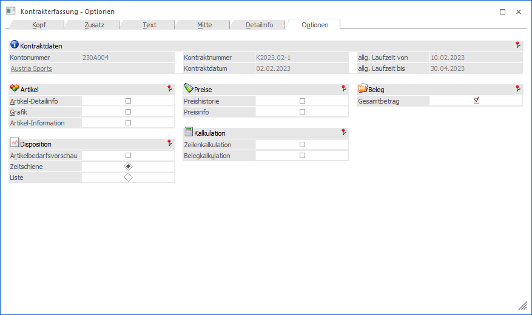

In dem Register "Optionen" kann u.a. eingestellt werden, welche Informationen während der Kontrakterfassung zusätzlich zur Verfügung stehen sollen. Alle Einstellungen werden hierbei benutzerspezifisch gespeichert!
Hinweis
Weitere Informationen, u.a. zu den Buttons des Programms "Kontrakterfassung", sind dem Kapitel Kontrakterfassung zu entnehmen.

Folgende Eingabefelder, Einstellungen und Information stehen zur Verfügung:
Kontraktdaten

Ø Kontonummer / Gruppennr.
An dieser Stelle wird die Nummer des Hauptkontos (WinLine START - Parameter - FAKT-Parameter - Belege - Allgemein - Option "Hauptkonto für Belege") bzw. der Gruppe des aktuellen Kontrakts angezeigt.
Ø Name
An dieser Stelle wird der Kontoname der Kontonummer bzw. der Gruppe dargestellt und das Fenster Kontoinformation kann direkt geöffnet werden.
Ø Kontraktnummer
An dieser Stelle wird die Kontraktnummer des Kontrakts angezeigt.
Ø Kontraktdatum
Hier wird das Kontraktdatum des Kontrakts dargestellt.
Ø allg. Laufzeit von / bis
In diesen Feldern wird die allgemeine Laufzeit des Kontrakts dargestellt.
Artikel

In diesem Bereich kann definiert werden, welche zusätzlichen Artikelinformationen (in separaten Fenstern) dargestellt werden sollen.
Ø Artikel-Detailinfo
Dieses Info-Fenster zeigt die wichtigsten Lagerinformationen des Artikels in komprimierter Form an.
Ø Grafik
Ist im Artikelstamm (Register "Texte") im Feld "Grafikdatei" ein Bild hinterlegt, kann durch Aktivierung dieser Option die Grafik im Belegerfassen angezeigt werden.
Ø Artikel-Information
Durch Aktivieren der Option "Artikel-Information" wird analog zum gewählten Artikel eine Detailinfo des Artikels angezeigt.
Hinweis
In diesem Fenster können auch Mehrjahresvergleiche und Archiv-Dokumente, jeweils bezogen auf den aktuellen Artikel, dargestellt werden (nähere Informationen hierzu entnehmen Sie bitte dem WinLine FAKT1-Handbuch, Kapitel "Artikel Info").
Disposition

In diesem Bereich kann die Artikelbedarfsvorschau aktiviert und parametrisiert werden.
Ø Artikelbedarfsvorschau
Durch Aktivierung der Option "Artikelbedarfsvorschau" wird die Artikelbedarfsvorschau aufgerufen und mit den Daten zum jeweiligen Artikel gefüllt. Über die Auswahl "Zeitschiene" oder "Liste" kann dabei die Art der Bedarfsvorschau definiert werden.
Preise

Ø Preishistorie
Bei Aktivieren dieser Checkbox wird die Preisentwicklung bei dem aktuell angewählten Artikel aufgrund der Informationen des Artikeljournals angezeigt. So ist sofort nachvollziehbar, wann welcher Artikel in welcher Menge um welchen Preis verkauft wurde (oder im Einkauf eingekauft wurde).
Ø Preisinfo
Durch Aktivierung dieser Option wird das Fenster "Preisinformation" automatisch für den im Fokus liegenden Artikel geöffnet und dessen Preise dargestellt.
Kalkulation

Ø Zeilenkalkulation
Durch Aktivieren der Option "Zeilenkalkulation" kann eine Zeilenkalkulation durchgeführt werden.
Ø Belegkalkulation
Durch Aktivieren der Option "Belegkalkulation" kann der gesamte Rohertrag des Kontrakts kalkuliert werden, wobei eine Änderung immer nur beim Summenrabatt berücksichtigt wird.
Beleg

Ø Gesamtbetrag
Durch Aktivierung dieser Option werden im Register "Mitte" die mitlaufenden Informationsfelder "Gesamtnettobetrag" und "Gesamtbruttobetrag" angezeigt.